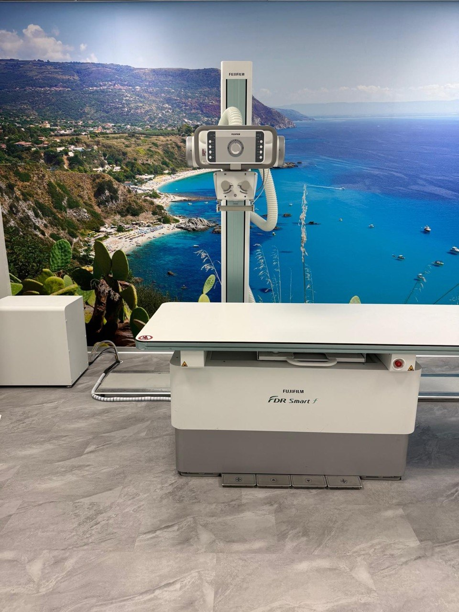

Immagini di alta qualità, a bassa dose, con referto in giornata.
La radiologia digitale è una tecnica di diagnostica per immagini che utilizza i raggi X per visualizzare le strutture interne del corpo umano. A differenza dei sistemi tradizionali analogici, le nostre apparecchiature acquisiscono le immagini direttamente su sensori elettronici ad alta risoluzione, eliminando la pellicola fotografica.
Il risultato è una qualità diagnostica superiore, accompagnata da una significativa riduzione della dose di radiazioni ricevuta dal paziente. Le immagini digitali possono essere elaborate, ingrandite e ottimizzate per consentire al medico radiologo di effettuare una valutazione precisa e completa.
Al Centro Diagnostico Latorre, il referto è firmato digitalmente e disponibile già in giornata, garantendo tempi rapidi per continuare il percorso di cura.

Una gamma completa di esami radiografici, eseguiti con apparecchiature di ultima generazione.
Esame fondamentale per la valutazione di polmoni, cuore e strutture mediastiniche.
Studio del rachide cervicale, dorsale e lombare, in proiezioni standard e funzionali.
Valutazione di spalla, gomito, polso, mano, anca, ginocchio, caviglia e piede.
Studio delle articolazioni coxofemorali, sacroiliache e dell'articolazione coxofemorale.
Panoramica dentale digitale per la valutazione completa di denti, mandibola e mascella.
Studio dell'addome in bianco per la valutazione di strutture addominali e calcificazioni.
Referto disponibile in giornata. Contattaci per prenotare il tuo esame.
Prenota Ora